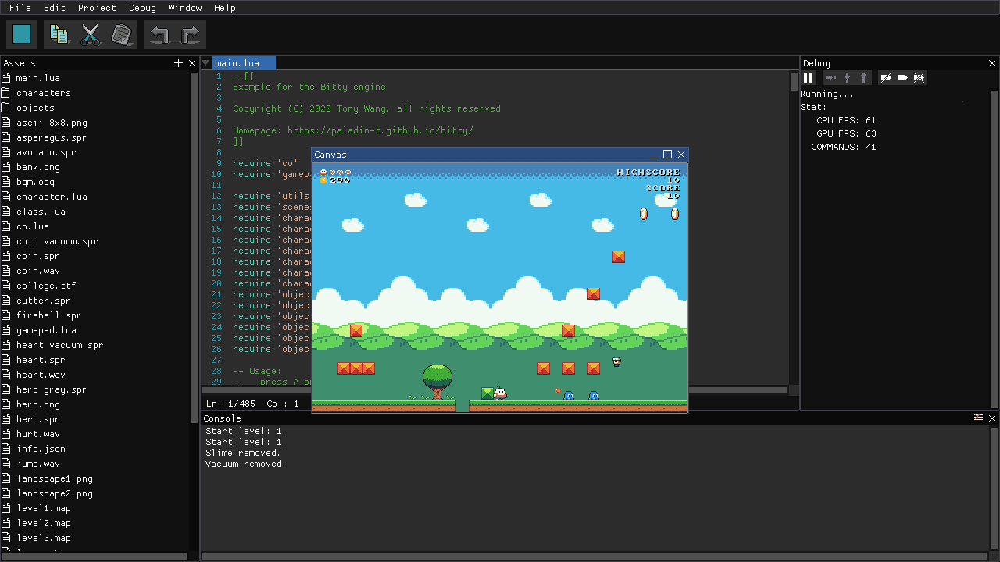
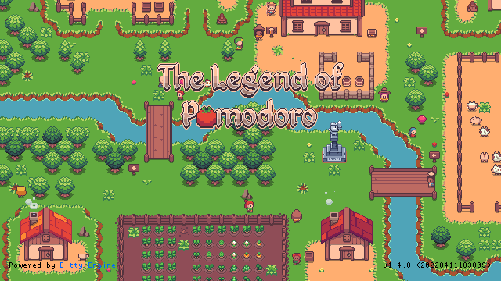
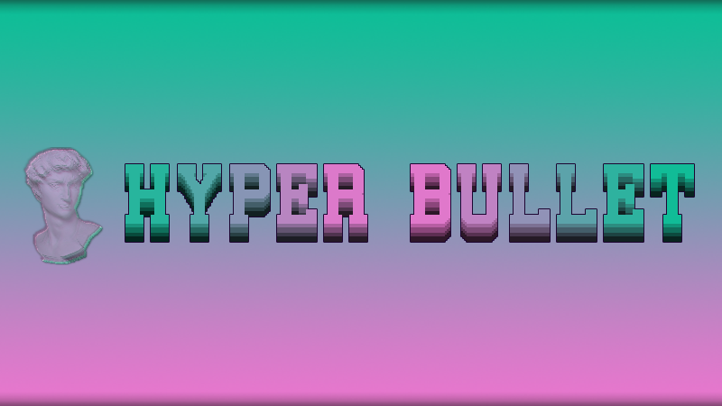
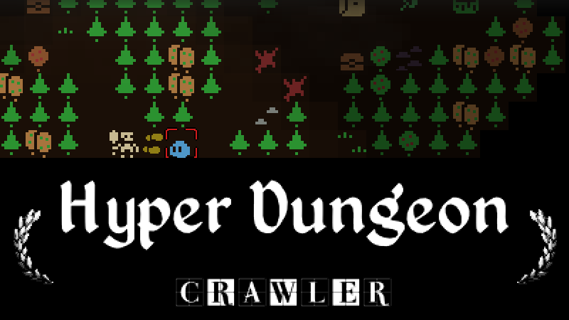
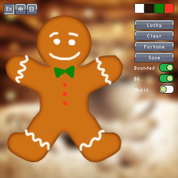
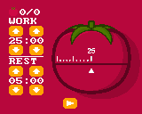

Steam | Itch | Twitter | GitHub
Creative kits

Bitty Engine - An itty bitty Game Engine, with built-in editors, programmable in Lua.

BASIC8 - An integrated Fantasy Computer for game and other program development. You can create, share and play disks in a modern BASIC dialect, with built-in tools for editing sprite, tiles, map, quantized, etc.

Crapht Box - A Fantasy Physics Sandbox, inspired by the Fantasy Console genre. It brings a simulated world with a number of disks and tools, and leaves you to play, program, create and share disks.
Apps

The Legend of Pomodoro
- A pomodoro tool and RPG game driven by tomatoes.
Other languages: 简体中文
Games

Hyper Bullet - A top-down action game replenished with agreeable vaporwave aesthetics, pure joy of combat and gunplay rhythm. Pick up a weapon, defeat oncoming enemies, survive in infinite crises, and write down your own legend here...
Other versions: demo on Itch
Hyper Dungeon Crawler
- A turn-based roguelike RPG with crafting. Collect materials and craft your unique tools, weapons, magic spells and other supplements and fight your way through a series of procedurally generated scenes.
How to Play?
Tiny games and programs

Gingerbread - A generative-art program which produces gingerbread cookies.

Tomato Garden - A Pomodoro time management application.

Canned Monsters - Procedurally generated monsters in a sardines can.

Dice - A 3D dice program.

Capsule Rush - Match-three to eliminate virus.
Articles
Vaporwave, Deconstructivism and Video Game - Vaporwave and video game need each other. There are quite a number of pioneer developers who have involved in introducing the vaporwave aesthetic to video games.
Smooth Tile-based Movement Algorithm with Sliding - Movement is a very basic concept in video games, it could be as simple as accumulating steps to a position value. This article introduces a smooth movement algorithm with tolerant sliding, which offers good adaptivity to various tile-based scenes.